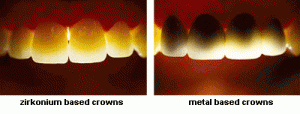

Coronas de Zirconia
¿Quiere saber más sobre las coronas de Zirconia y saber si es una buena opción para usted? Hoy en día hay tanta información en internet, que puede ser confuso y frustrante tratar de ver toda la información y saber que es verdadero y si confiar. Aquí le informaremos para que tenga la información correcta y haga su mejor decisión para saber qué clase de corona necesita, y asegurar que tenga el tratamiento adecuado.
Las coronas y puentes de zirconia son tan fuertes que se pueden usar en cualquier parte de la boca. Puede aguantar cualquier mordida, la presión y el rechinar de los dientes.
The look of zirconium crowns and bridges is so close to natural teeth that it is hard to tell the difference and it is this quality which makes it very useable within dental work. Zirconium crowns can be fixed using traditional dental cements.
Las coronas de porcelana son de un material convencional usado hoy en día. Sin embargo, se pueden astillar o romper, esto pasa porque se adhiere metal a la porcelana, en el caso de la zirconia es todo el material igual de adentro hasta afuera. La zirconia da la fuerza de un diente normal y una apariencia natural. Las coronas y puentes de zirconia se ven muy naturales, es difícil notar la diferencia; es la calidad la que lo hace verse tan natural.
La zirconia se coloca usando el pegamento normal que se utiliza en las coronas normales. Las coronas de zirconia serán el material preferido para coronas en el futuro. El material que se usa es muy fuerte y perdura el uso diario. Si usted busca algo que se vea natural, lo mas estético son las coronas y puentes de zirconia. Son tan similares a los dientes naturales que la luz pasa igual. Esto puede ser importante para usted si hay dientes naturales enseguida de las coronas.
Definición general: una corona dental es una restauración que cubre completamente al diente o implante dental, es típicamente adherido al diente. La porcelana (cerámica) incluye materiales como porcelana, cerámica, vidrio, hay coronas libres de metal.
Visión adjuntaLas coronas de zirconia no cambian a color negro en la línea de la encía como pasa con las coronas de metal/porcelana. También la sensación caliente/frio no se sentirá porque no hay conducto eléctrico como pasa con los demás coronas.
El procedimiento de las coronas de zirconia consiste en: La porción de tu diente natural es recomido y se coloca una corona temporal mientras hacemos su corona de zirconia en nuestro laboratorio de la impresión de su diente original.